地政学
クイーンズタウンは首都でも港湾都市でもないが、ニュージーランドの観光国家像を世界へ示す舞台である。南島内陸の空港、道路、湖畔景観が豪州、アジア、欧米の旅行需要と直結し、自然保護と成長管理を政治課題にする。
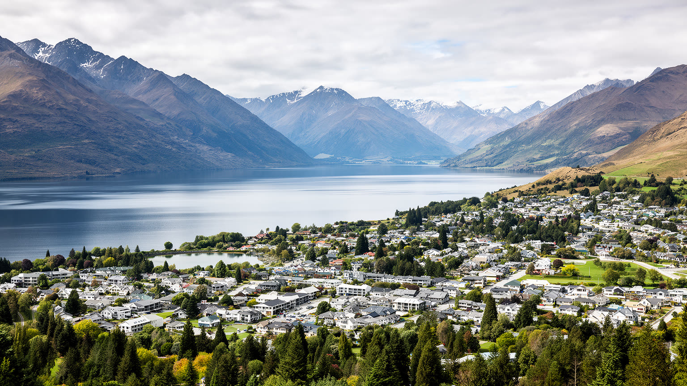
🇳🇿 ニュージーランド / 南島 / World City Atlas
湖と山を前面に出すリゾート都市は、冒険観光、冬のスキー、季節労働、住宅難、マオリの土地記憶、気候リスクを同じ狭い谷と湖岸に抱えている。
都市の骨格
クイーンズタウンは大都市ではないが、ワカティプ湖と山岳景観を世界市場へ売り出す力で、南島の観光、住宅、交通、自然保全の議論を強く動かす。景色の美しさと生活費の重さが同じ街路に表れる。
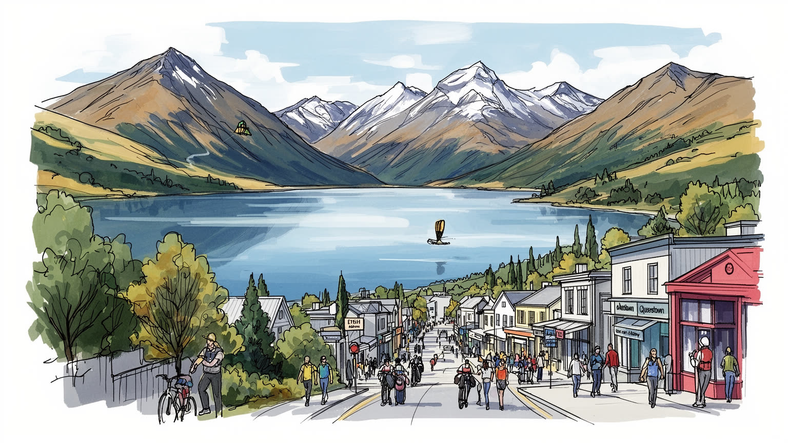
クイーンズタウンは首都でも港湾都市でもないが、ニュージーランドの観光国家像を世界へ示す舞台である。南島内陸の空港、道路、湖畔景観が豪州、アジア、欧米の旅行需要と直結し、自然保護と成長管理を政治課題にする。
宿泊、飲食、ガイド、スキー場、建設、空港、小売、清掃、送迎、ワイン産業が雇用を作る。観光収入は大きいが、季節労働と高い家賃が生活を不安定にし、働く人が街に住めるかが経済の核心である。課題も重い街。
マオリの地名と湖の物語、開拓と金鉱の記憶、移住者の教会、アウトドア文化、食とワイン、若い旅行者の夜の街が重なる。観光の華やかさの下に、土地への敬意と地域共同体の薄れやすさが同居する。日々続く都市。
旅行者は湖畔、展望台、スキー、トレイル、ワイナリーを短く巡るが、住民は通勤、住宅費、保育、冬の暖房、道路混雑と向き合う。美しい景観は生活の背景であると同時に、毎日の費用を押し上げる力にもなる日々。
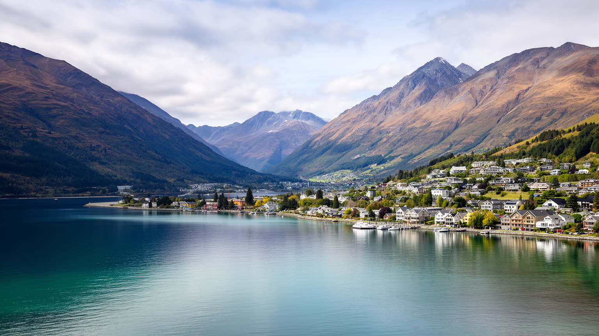
クイーンズタウンを読む入口は、ワカティプ湖と山が作る圧倒的な地形である。街は広い平野に伸びるのではなく、湖岸、谷、斜面、空港近くの盆地、周辺の小集落へ細く広がる。美しい眺めは観光資源であると同時に、道路容量、住宅地、下水、除雪、斜面災害、景観規制を厳しくする都市条件でもある。リマーカブルズ山脈、ベン・ローモンド、湖面の風、冬の雪線は、訪問者にとっては写真の背景だが、住民には移動、暖房、日照、通学、建設費を左右する日常である。湖は遊覧船や水辺散策を支え、同時に水質保全、排水、岸辺の開発、観光船の運航をめぐる責任を生む。狭い地形に観光、住宅、空港、道路、商業が集中するため、街の成長は常にどこまで広げるかという選択になる。クイーンズタウンの地図では、中心部だけでなく、フランクトン、アロータウン、ギブストン、ワナカ方面への回廊も一体で見なければならない。山岳リゾートの魅力は、自然の余白が近いことにあるが、その余白を消費しすぎると都市の価値そのものが傷つく。さらに谷筋の限られた土地は、学校、医療、商店、駐車場を同じ場所へ集め、日常の混雑を生む。地形を読むことは、絵葉書の眺めの内側で都市がどれほど慎重な調整を求められているかを読むことでもある。見える山の近さは、土地の少なさと表裏一体である。それも都市条件だ。
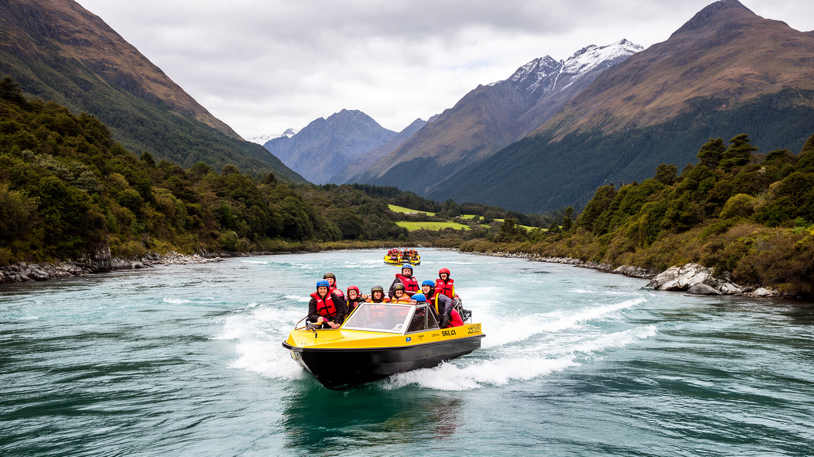
クイーンズタウンの名声は、単に美しい湖畔の保養地であることから生まれたのではない。バンジージャンプ、ジェットボート、ラフティング、マウンテンバイク、パラグライダー、スキー、トレッキングのように、地形の急峻さと水の流れを体験商品へ変えたことが大きい。冒険観光は自由で若いイメージを持つが、実際には安全管理、保険、許認可、天候判断、ガイド訓練、救急体制、装備点検の積み重ねで成り立つ高度なサービス業である。旅行者が数分のスリルを味わう背後で、スタッフは早朝から送迎、説明、整備、清掃、写真販売、リスク説明を繰り返す。事故が起きれば都市全体の評判に影響し、過度な混雑は体験の質を下げる。冒険を売る街であるほど、危険を軽く見せず、自然を舞台装置として使い尽くさない倫理が必要になる。さらに、気候変動で雪や水量が変われば、季節商品の収益も揺らぐ。クイーンズタウンの観光産業は、風景を見るだけの消費から、身体で地形を感じる市場へ都市を変えた。その成功は大きいが、自然、労働、安全を同時に守れなければ続かない。体験の価格が上がるほど、地域の若者や低所得の住民が自分の街の自然を楽しみにくくなる面もある。冒険観光を都市文化にするには、訪問者向けの興奮と住民の利用権を両立させる工夫が欠かせない。安全への信頼が、街のブランドそのものを支えている。
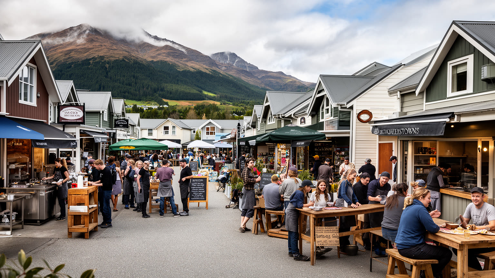
観光客がクイーンズタウンで経験する滑らかな滞在は、多数の季節労働と移動する若者の仕事に支えられている。ホテルの客室清掃、レストランの厨房、バーの深夜営業、スキー場のリフト係、レンタル装備の整備、空港送迎、ツアー受付、建設現場、スーパーの棚出しは、街の表面には出にくいが不可欠な労働である。ワーキングホリデー、留学生、国内移住者、周辺地域からの通勤者は、繁忙期の需要に合わせて街へ集まる。しかし家賃が高く、空室が少なく、冬と夏で仕事量が変わるため、働く人の生活は不安定になりやすい。相部屋、長い通勤、複数の仕事、短期契約は、観光都市の便利さの裏側である。雇用主にとっても、人材確保は大きな制約で、宿泊施設や飲食店が客を受け入れられるかはスタッフの住まいに左右される。観光収入を地域の豊かさへ変えるには、賃金、休息、住居、交通、技能訓練を一体で考える必要がある。クイーンズタウンの労働問題は、景色の良い街で働く楽しさだけでは説明できない。住み続けられる条件があって初めて、観光の質も保たれる。短期で去る人が多い街では、職場の経験や地域のつながりも蓄積しにくい。働く人を一時的な補充ではなく、地域社会の担い手として扱えるかが、観光都市の持久力を左右する。繁忙期の笑顔は、安定した住まいと休息があって初めて続く。
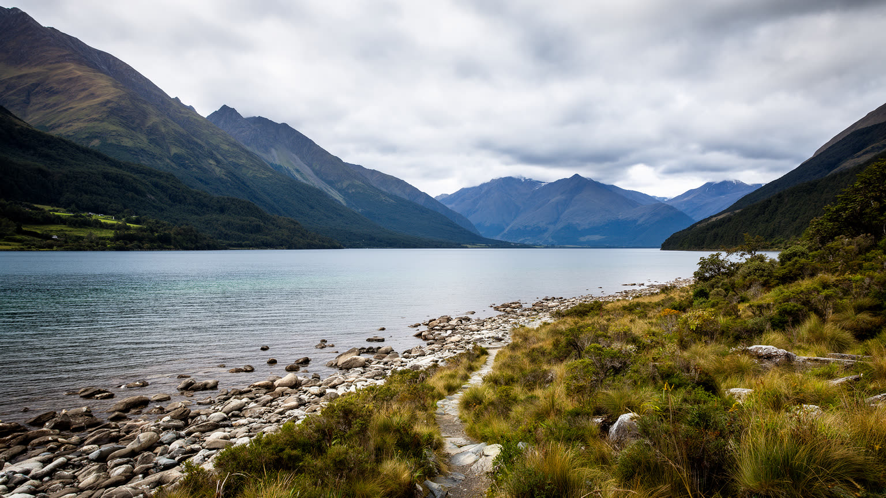
クイーンズタウンの景観は、英語名のリゾート地になる前から、マオリの移動、採集、物語、地名の世界に属していた。ワカティプ湖、山々、川、峠は、食料、交易路、季節の移動、精神的な意味を持ち、単なる観光の背景ではない。今日の都市では、湖畔の看板、文化体験、学校教育、環境管理、地名の扱いを通じて、その記憶をどのように尊重するかが問われる。マオリ文化を短い演出や装飾に閉じ込めると、土地の権利や環境の責任が見えなくなる。観光客が湖を眺め、山へ登り、川で遊ぶ時、その場所には先住民の歴史と現在の関与がある。開発許可、景観保護、水質管理、観光の語り方には、マナ・フェヌアの視点を含める必要がある。さらに、金鉱、牧羊、移住、リゾート開発の歴史は、土地利用を何度も変えてきた。クイーンズタウンを深く読むには、景色を美しい資源として消費するだけでなく、その景色を誰が名づけ、誰が使い、誰が守るのかを問うことが重要である。湖と山の魅力は、歴史を薄めるほど強くなるのではなく、土地の記憶と結びつくほど深くなる。観光案内で使われる言葉や地図の表記も、土地との関係を作る。正しい発音、共同管理、環境修復、地域教育を通じて、景観は見られる対象から共有する責任へ変わっていく。眺めるだけの観光から、敬意を持って歩く観光へ変えることが求められる。

クイーンズタウンの社会問題で最も深刻なものの一つが住宅である。湖と山の景観は不動産価値を高め、別荘、短期宿泊、投資需要、移住希望者を引き寄せる一方、観光を支える労働者が住める家を不足させる。中心部に近い住宅は高額で、手頃な住まいは遠くなり、道路混雑と通勤費が生活を圧迫する。フランクトンや周辺集落の開発は供給を増やすが、斜面、景観、インフラ、学校、医療、下水、公共交通の制約を伴う。短期レンタルが増えると、旅行者の選択肢は増えるが、長期賃貸の戸数が減り、地域の隣人関係も弱くなりやすい。住宅難は若いスタッフだけの問題ではない。教師、看護師、保育士、清掃員、調理人、警察、救急、行政職員が街に住めなければ、観光都市の日常機能も崩れる。豪華な景色を持つ街ほど、誰がその景色の近くで暮らせるのかが政治問題になる。クイーンズタウンの成長を持続させるには、低価格住宅、労働者向け住居、公共交通、短期宿泊の管理、地域サービスを同時に整える必要がある。住宅は観光の外側にある課題ではなく、観光経済そのものの土台である。住まいが遠くなるほど、家庭の時間、燃料費、冬の安全、地域活動への参加も削られる。景観を守る計画と、働く人の住まいを作る計画を切り離さないことが必要だ。家を確保できるかは、地域に根を下ろせるかを決める。
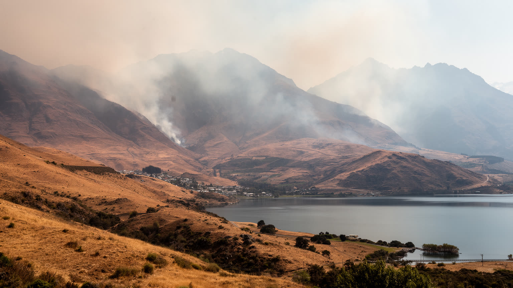
クイーンズタウンは冷涼で澄んだ山岳リゾートという印象を持つが、気候リスクはすでに都市の課題である。雪の量と期間が変わればスキー場の営業、雇用、装備投資、冬の観光需要が揺らぐ。乾燥した夏は山火事の危険を高め、強い雨は斜面崩壊、道路閉鎖、湖岸の浸水、河川の濁りを招く。観光客が集中する時期に災害が起きれば、避難、宿泊、通信、医療、空港運航の負担は一気に増す。山岳道路が限られるため、交通網の冗長性も小さい。気候変動は自然景観の問題に見えるが、実際には保険、建設基準、上下水道、救急、農業、ワイン、観光商品の設計に関わる経済問題である。雪を人工的に補う技術は一時的な対応になっても、水資源やエネルギーの制約を消すわけではない。湖と山を売りにする都市は、その自然の変化に正直でなければならない。クイーンズタウンの将来は、訪問者数を増やすことだけでなく、低炭素な移動、災害時の避難、斜面開発の抑制、森林と水辺の管理をどう進めるかに左右される。気候への備えは、観光の質を守るための基礎投資なのである。宿泊施設や住宅の断熱、停電時の備え、観光客への情報提供も欠かせない。危機の時に短期滞在者と住民を同時に守れる仕組みが、山岳都市の信頼を支える。気候リスクを隠さず語ることも、責任ある観光地の条件になる。備えが重要だ。
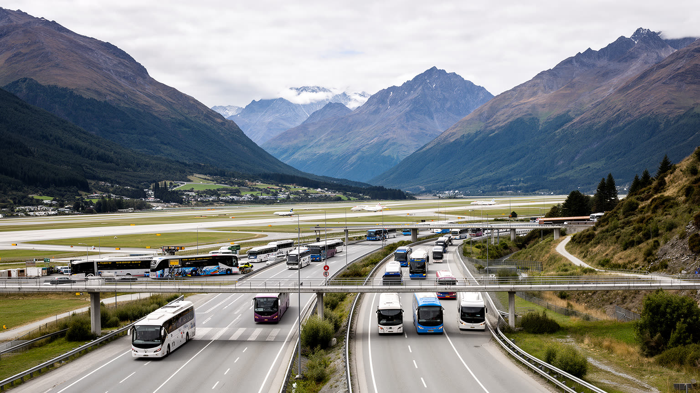
クイーンズタウンの国際的な存在感は、空港と道路の接続に大きく依存している。湖畔の小さな街が世界の旅行市場と結びつくのは、豪州や国内主要都市からの便、レンタカー、観光バス、シャトル、山岳道路があるからである。空港はフランクトンの生活圏に近く、利便性は高いが、騒音、用地、悪天候、拡張余地、交通渋滞の問題を抱える。旅行者が到着する時間帯には、空港周辺の道路、小売、宿泊、レンタカー施設が一斉に混み、住民の日常移動にも影響する。公共交通が弱いまま観光客と住民の車依存が増えれば、景観都市の魅力である静けさも損なわれる。ミルフォードサウンド、ワナカ、クロムウェル、テアナウ方面への移動は、地域全体の観光ルートを作るが、道路閉鎖や事故への弱さも示す。交通を読むことは、単に便数や所要時間を見ることではない。誰が車を持てるのか、スタッフが早朝勤務へ行けるのか、観光バスが中心部を占有しないか、排出をどう減らすかまで含む。クイーンズタウンの玄関口機能は、成長の原動力であると同時に、生活の混雑と環境負荷を生む。移動の設計が、観光都市の成熟を決める。徒歩で楽しめる中心部と、車がなければ働きにくい周辺部の差も大きい。空港からホテルまでの短い距離より、住民が毎日使う移動の選択肢を増やせるかが重要である。観光の入口は、生活道路でもある。
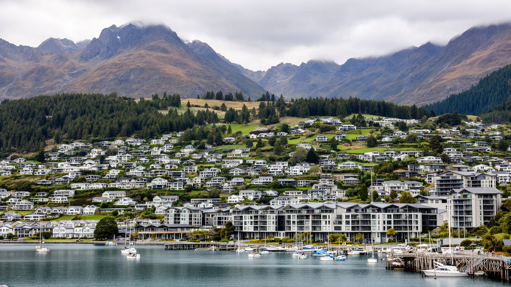
クイーンズタウンの食と夜の景観は、湖畔の散策を消費へつなぐ重要な装置である。中心部にはカフェ、バー、湖を望むレストラン、ハンバーガー店、クラフトビール、ワインバー、深夜の音楽が集まり、周辺のギブストンやセントラル・オタゴのワイン産地は日帰り観光と食文化を厚くする。旅行者にとって食は、アクティビティの間をつなぐ休息であり、悪天候の日の楽しみでもある。一方で飲食産業は、家賃、仕入れ、人手不足、深夜の騒音、アルコール管理、繁忙期と閑散期の差に悩む。若い旅行者の夜の街は活気を作るが、住民には治安、清掃、騒音、短期滞在者の振る舞いとして見えることもある。ワイン観光は高付加価値の滞在を生むが、車移動と飲酒、農地利用、水資源、労働力の問題を伴う。食の豊かさを都市の魅力として維持するには、厨房やホールで働く人の住まい、地域生産者への還元、過度な観光価格への依存を考える必要がある。クイーンズタウンの夜は、景観だけでは生まれない。仕込み、清掃、送迎、警備、音楽、農家、醸造家、季節スタッフの仕事が、滞在の記憶を支えている。夜のにぎわいを地域の生活と両立できるかが、リゾート都市の品格を左右する。地元の人が普段使いできる店を残せるかも重要である。観光客向けの価格と日常の食卓が離れすぎると、中心部は住民の街でなくなる。
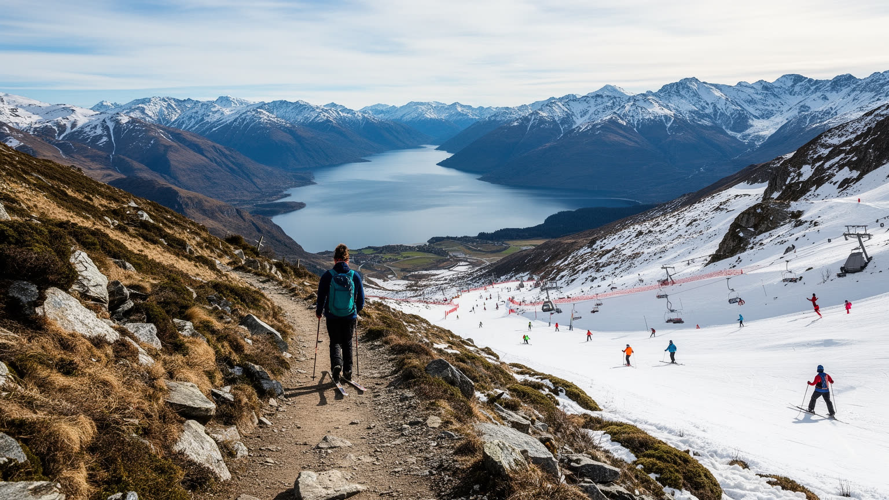
クイーンズタウンでは、トレイルとスキーが都市の暦を形づくる。夏は湖畔の散歩、山道、サイクリング、トレイルラン、キャンプ、釣り、ゴルフが人を引き寄せ、冬は周辺のスキー場が宿泊、飲食、レンタル、交通、夜の消費を押し上げる。アウトドアは観光商品であると同時に、住民の生活文化でもある。仕事の前後に湖を走り、休日に山へ入ることが、地域への愛着を作る。だが人気のトレイルが混雑すれば、駐車、踏圧、外来種、トイレ、ごみ、救助費が問題になる。スキー場は雪の質に左右され、車で山へ向かう移動は渋滞と排出を生む。自然を楽しむ文化は、自然を傷つける圧力にもなり得る。屋外活動を長く続けるには、利用者数の管理、公共交通、整備費の負担、地元住民の静けさ、マオリの土地記憶、野生生物の保護を同じ計画で扱う必要がある。クイーンズタウンのトレイルとスキーは、健康で自由な生活の象徴である一方、都市の成長が自然の許容量を超えないかを測る目盛りでもある。山へ向かう楽しさを残すためには、歩く道そのものを公共財として守る意識が欠かせない。初心者、上級者、子ども、高齢者、観光客が同じ自然を使うため、案内、救助、マナー教育も都市機能の一部になる。遊びの場を守ることは、地域の健康と観光収入を同時に守ることである。季節ごとの利用を調整する力が、屋外文化を長持ちさせる。
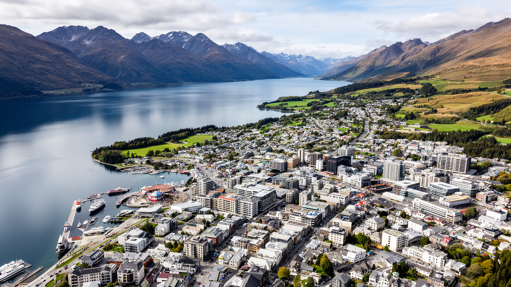
クイーンズタウンは、小さな人口規模だけでは測れない都市である。湖と山の景観は世界中の旅行者を集め、冒険観光とスキー、ワイン、夜の飲食、トレイル文化を育てた。しかしその成功は、住宅費、季節労働、道路混雑、気候リスク、景観保護、マオリの土地記憶への責任を同時に重くしている。美しいリゾートとして見るだけなら、中心部の湖畔、展望台、レストラン、空港の便利さで十分に見える。だが都市として読むなら、清掃する人がどこに住むのか、スタッフが早朝の空港へどう行くのか、湖の水質を誰が守るのか、山火事や雪不足にどう備えるのか、短期宿泊が近隣をどう変えるのかまで見なければならない。クイーンズタウンの価値は、自然を都市の外側に置くことではなく、自然と観光と生活が狭い地形でぶつかる現実を調整する力にある。訪れる人にとっての数日の楽園は、住む人にとっては年間を通じた費用と責任の場所である。その両方を重ねて見る時、この街は南島の観光拠点であるだけでなく、世界の景観都市が抱える成長の矛盾を映す鏡になる。湖岸の散歩、空港の到着口、スタッフ用の部屋、冬の道路、ワイン畑を同じ地図に置くと、都市の本当の輪郭が見える。クイーンズタウンを読むことは、美しさを支える制度と労働を読むことである。その視点があって、旅の記憶は都市理解へ変わる。